GIS & Spatial Analysis
ArcGIS, QGIS, spatial analysis, geoprocessing, thematic mapping, network and proximity analysis.
GIS • REMOTE SENSING • GEOSPATIAL APPLICATIONS
Building practical geospatial solutions through GIS, Remote Sensing, Smart City applications, spatial analysis and environmental research.
01 / ABOUT
I am a GIS professional with an academic background in Remote Sensing and Applications, working across geospatial analysis, Smart City applications, environmental mapping and spatial decision support.
My work combines GIS, satellite remote sensing, thematic mapping, dashboard-oriented geospatial applications and research methods to convert spatial data into clear, useful insights.
02 / EXPERTISE
ArcGIS, QGIS, spatial analysis, geoprocessing, thematic mapping, network and proximity analysis.
Satellite-image analysis, LULC, NDVI, NDBI, terrain analysis, environmental indicators and change analysis.
Urban GIS, dashboards, field applications, asset mapping, coverage analysis and geospatial decision support.
Sentinel, Landsat, DEM-based analysis and Google Earth Engine workflows for regional-scale studies.
Trend analysis, Mann–Kendall, Sen's slope, Pettitt test, SNHT, LOWESS and spatial interpretation.
ArcGIS Dashboards, Enterprise feature layers, Field Maps, Survey123 and web-oriented GIS workflows.
03 / SELECTED WORK
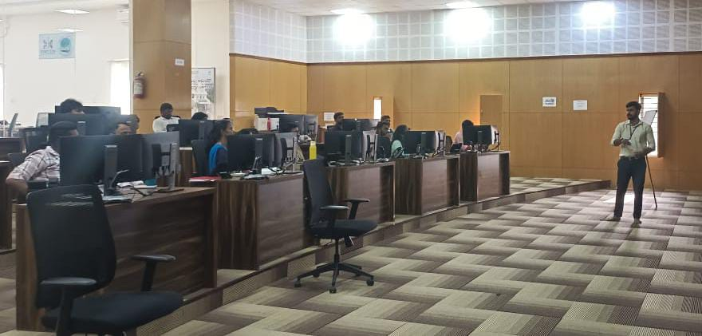
SMART CITY GIS
GIS presentations, ward-level spatial analysis, urban infrastructure mapping and geospatial decision-support workflows.
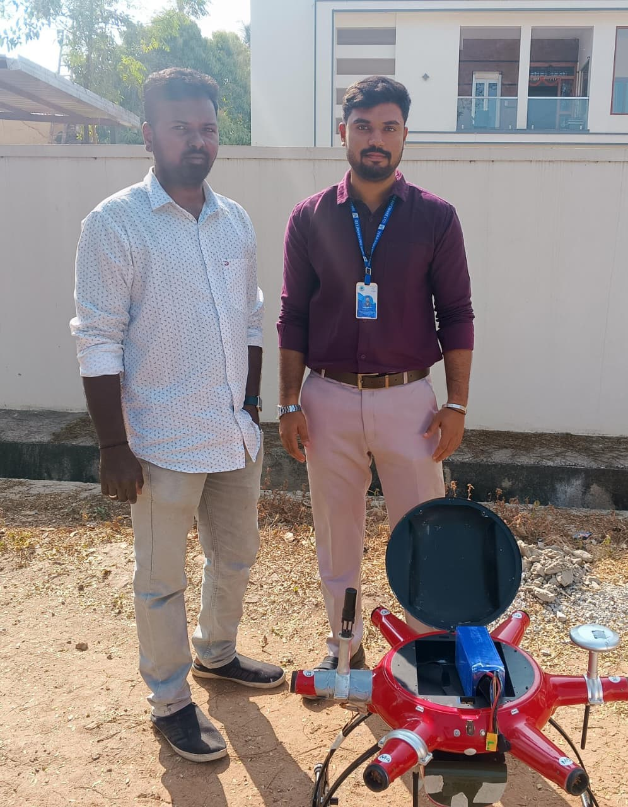
REMOTE SENSING & UAV
Applied field-oriented geospatial workflows for drone survey activities and digital-twin related mapping.
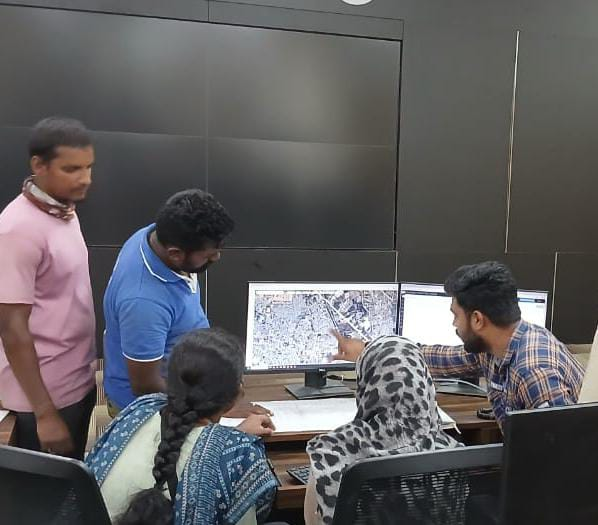
GIS APPLICATION
Practical GIS communication and spatial analysis for ward-level planning and operational decision support.
04 / RESEARCH
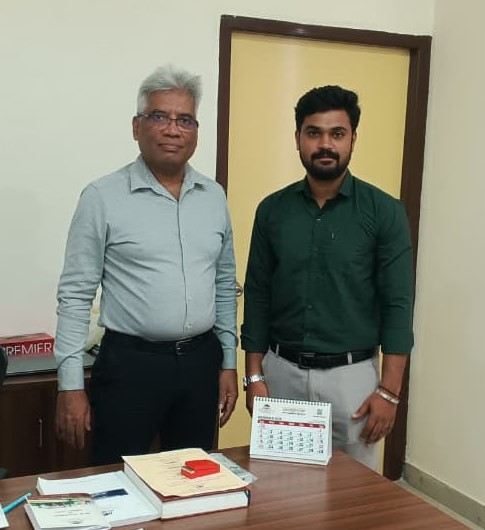
Research & academic work in geospatial science
Spatio-temporal transformations and their relationship with environmental systems.
Groundwater potential assessment, thematic layers, multi-criteria analysis and spatial decision support.
Long-term rainfall trends, variability and statistical analysis using gridded and satellite datasets.
Urban heat, vegetation, built-up dynamics and pollution-related geospatial analysis.
05 / PROFESSIONAL HIGHLIGHTS
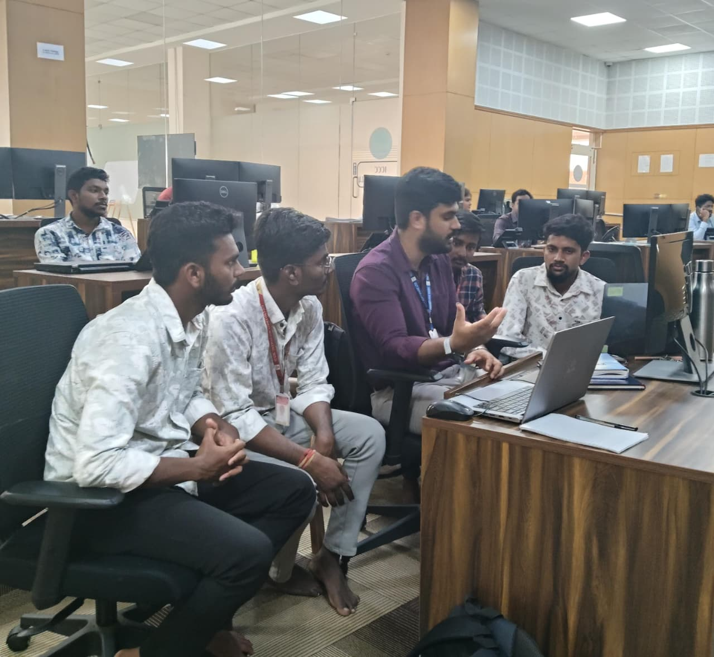
Hands-on GIS guidance, project mentoring and internship-oriented technical training.
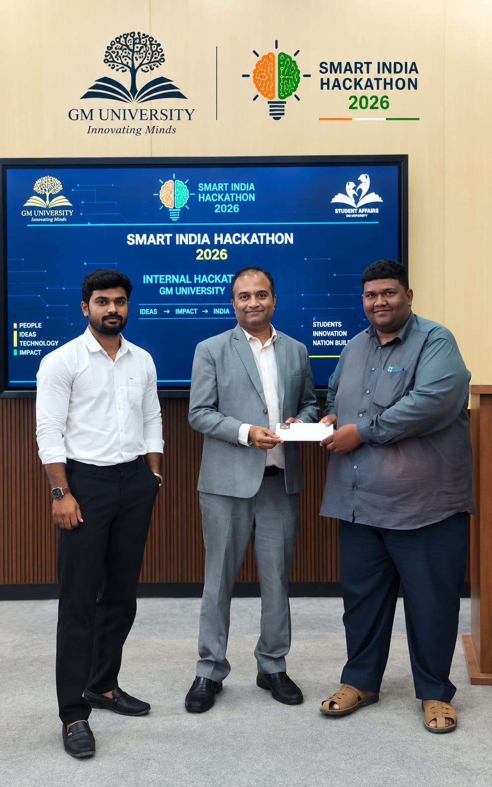
Participation in technical evaluation and jury activities at hackathon events.
06 / GALLERY
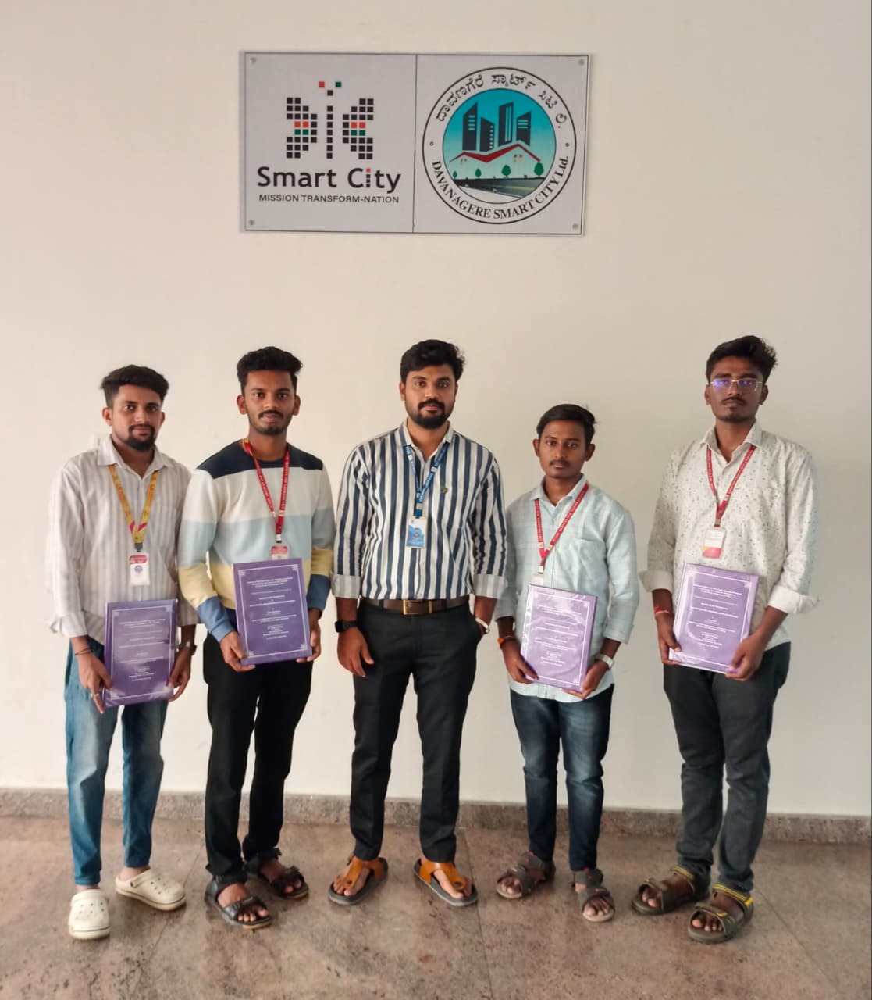
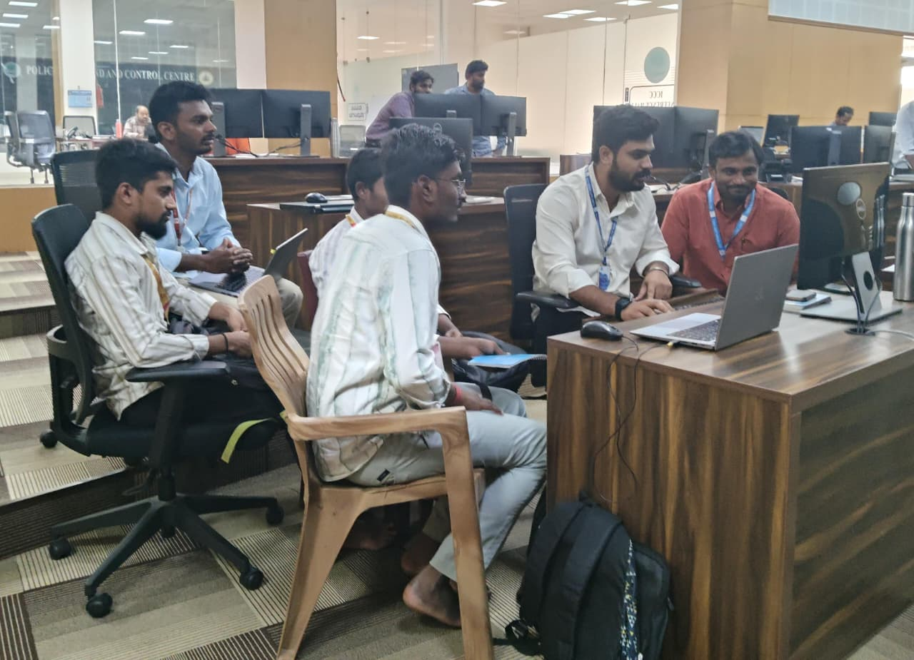
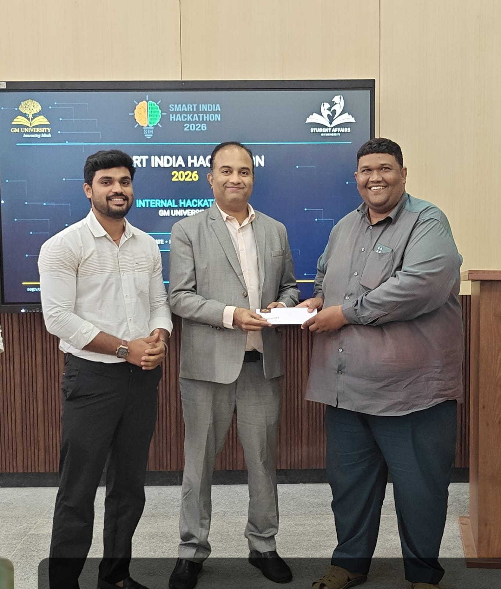
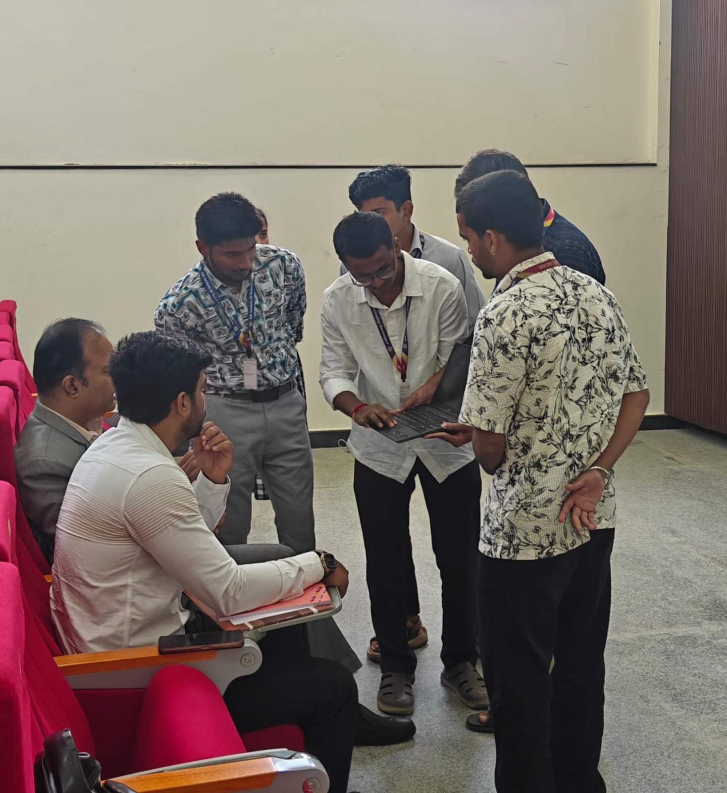
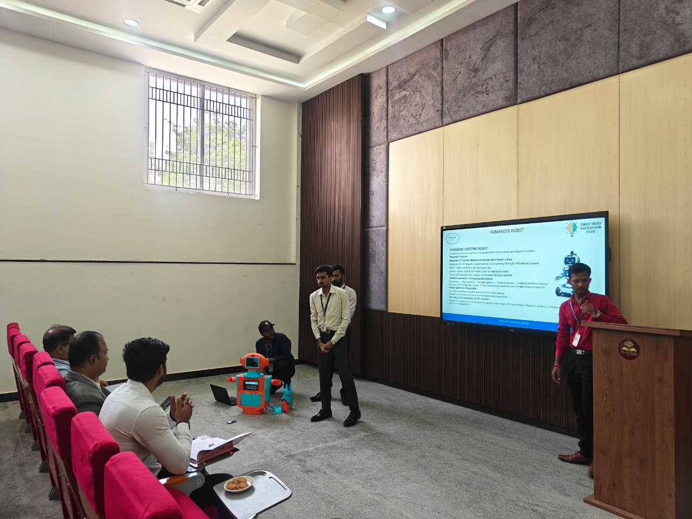
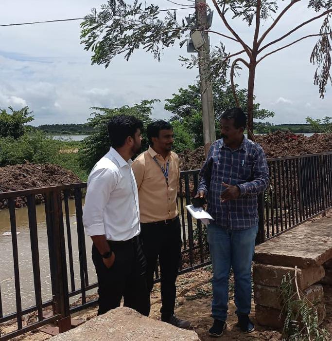
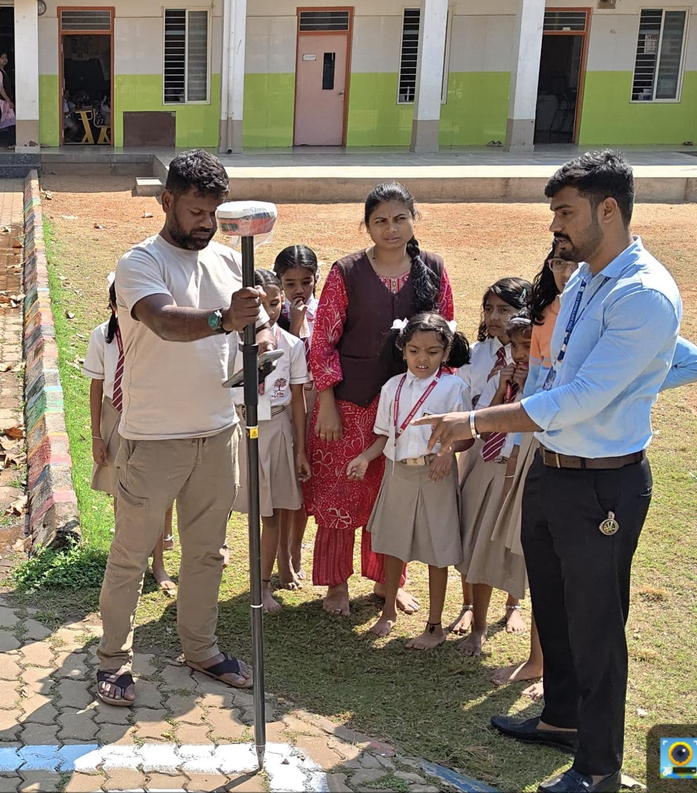
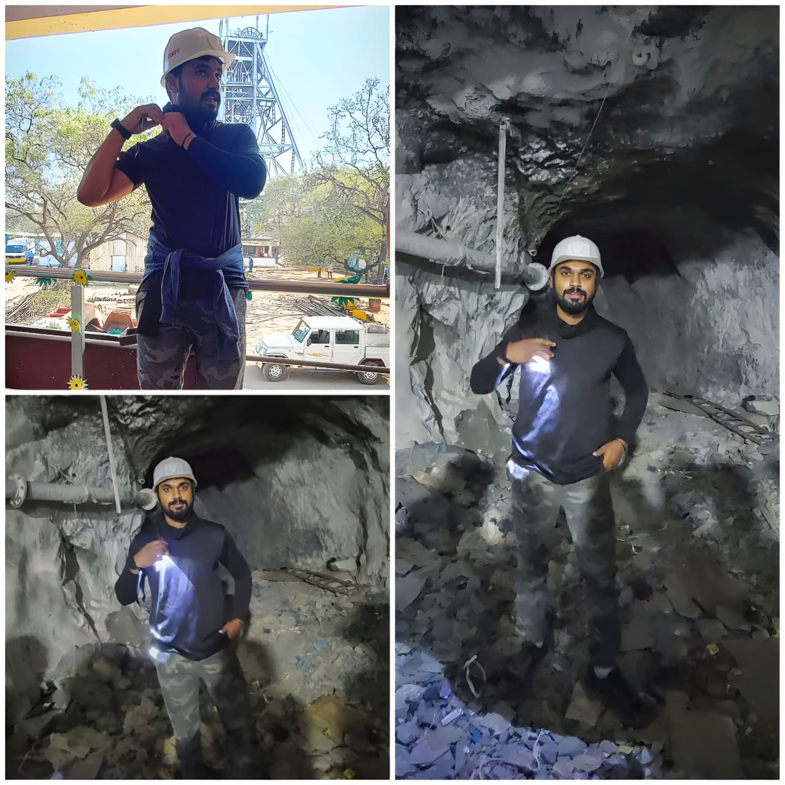
07 / CONNECT
For GIS, Remote Sensing, geospatial applications, research and technical collaboration.